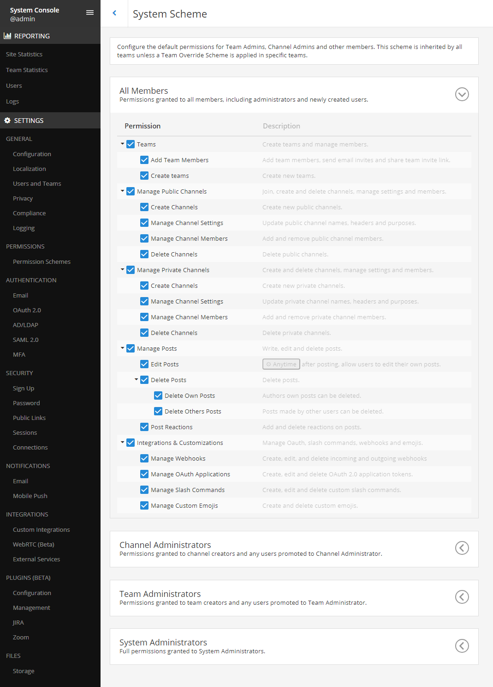
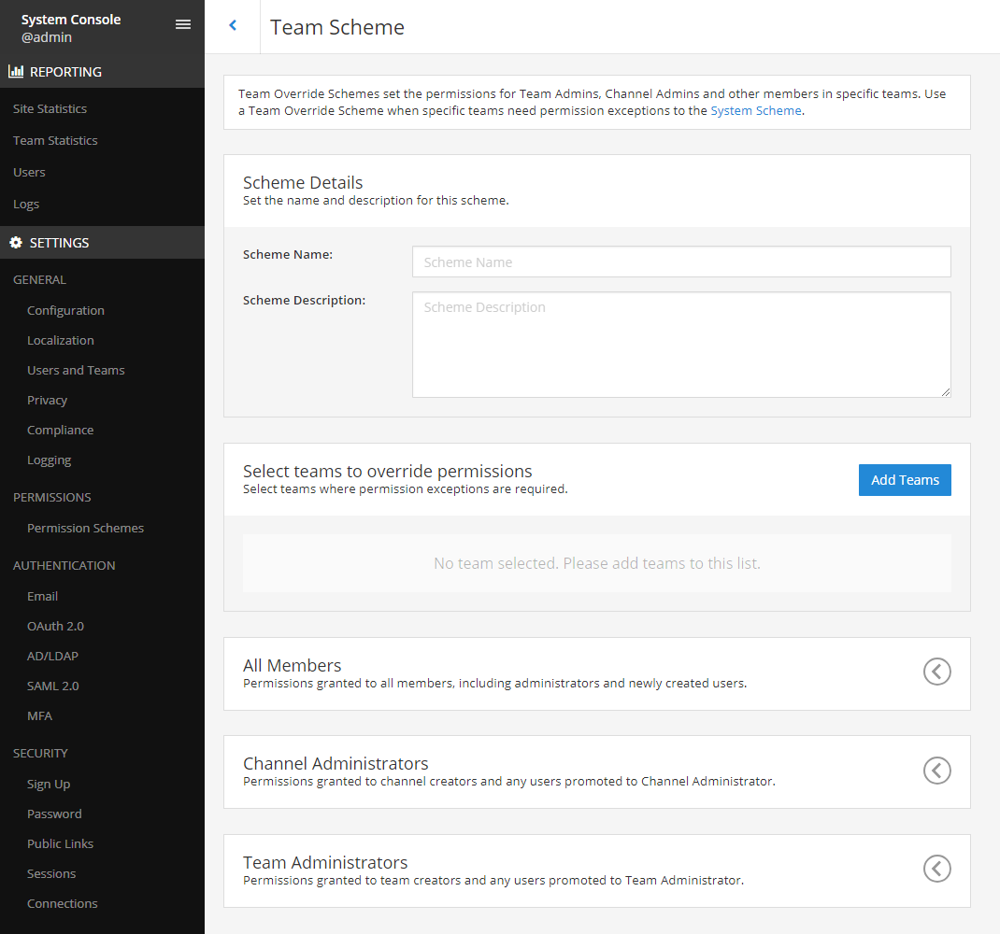

Advanced permissions#
 Available on all plans
Available on all plans
 Cloud and self-hosted deployments
Cloud and self-hosted deployments
Mattermost system admins using Mattermost Cloud or Mattermost Server can use Advanced Permissions to customize which users can perform specific actions, such as creating teams, managing channels, and configuring webhooks. The Mattermost permission system is based on a modified RBAC (role-based access control) architecture, using roles to determine which users have the ability to perform various actions.
Two permission schemes are provided in Mattermost:
System Scheme: Applies permissions universally across all teams and channels.
Team Override Schemes: Allow admins to customize permissions for each team (available in Mattermost Professional and Enterprise).
This document describes the types of permissions that can be given to users of Mattermost using schemes as well as channel settings and roles. The permissions backend documentation provides additional technical details around permissions.
Permissions structure#
The Mattermost System Console provides a number of elements for Admins to control the permissions in their system.
System scheme#
You can set the default permissions granted to system admins, team admins, channel admins, guests (if enabled), and all members. The permissions granted in the System Scheme apply system-wide, meaning:
Guests: If Guest Accounts are enabled, permissions apply to guest users in all channels, in all teams.
All Members: Permissions apply to all members, including admins, in all channels, in all teams.
Channel Administrators: Permissions apply to all channel admins in all channels, in all teams.
Team Administrators: Permissions apply to all team admins, in all teams.
To override the System Scheme default permissions in a specific team, you must set up a Team Override Scheme.
You can access the System Scheme interface by going to System Console > User Management > Permissions > System Scheme.
Team override scheme#
Note
 Available only on Enterprise and Professional plans
Available only on Enterprise and Professional plans
Available in legacy Enterprise Edition E10 and E20
On systems with multiple Mattermost teams, each team may operate and collaborate in a unique way. Team Override Schemes give Admins the flexibility to tailor permissions to the needs of each team.
When you use this permission scheme:
The permissions granted in a Team Override Scheme apply only in the teams which are assigned to the scheme.
The System Scheme does not apply to teams that are added to a Team Override Scheme.
Teams can only belong to one Team Override Scheme.
You can access the Team Override Scheme interface by going to System Console > User Management > Permissions > Team Override Schemes.
Channel permissions#
The channel permissions interface is accessed in System Console > User Management > Channels.
Channel moderation#
This content has moved to team and channel management.
Supplementary roles#
Available in a future release of Mattermost Enterprise
Allows admins to grant additional permissions to specific users or to a group of users based on AD/LDAP group membership. Permissions can be granted within the scope of channels, teams, or system level.
Recipes#
This section provides some examples of common permissions use cases for team management, channel management, and overall permissions.
Team management#
Only allow admins, in a specific team, to add members
Example: In Team A, only allow system and team admins to add new team members. As the default for all other teams, allow all users to add and invite new members.
Go to System Console > User Management > Permissions.
Select Edit Scheme.
In the All Members > Teams panel, check the box for Add Team Members. This sets the system default for all teams.
Select Save.
Select the back arrow to return to the Permission Schemes menu.
Select New Team Override Scheme.
Name and describe the scheme. For example,
Authorized Personnel Onlywith descriptionRestrict adding team members to Team and System Admins.Select Add Teams to add Team B to the Select teams to override permissions list, locate Team B, then select Add.
In the All Members panel, uncheck the box for Add Team Members.
In the Team Administrators panel, check the box for Add Team Members.
Select Save.
Select the back arrow to return to the Permission Schemes menu.
Public and private channel management#
Restrict who can rename channels and edit channel header and purposes
Example: As the default for the entire system, restrict renaming channels and editing headers and purposes to admins only.
Go to System Console > User Management > Permissions.
Select Edit Scheme.
In the All Members panel, uncheck the box for Manage Public Channels > Manage Channel Settings.
The Manage Channel Settings option is now only available to Channel Administrators, Team Administrators, and System Administrators.
Note
Permissions for channel renaming, editing channel header, and editing channel purpose are currently grouped in a single permission. These will be split into separate permissions in a future release.
Restrict who can create channels, in specific teams
Example: In Team C, restrict public channel creation to admins. As the default for all other teams, allow everyone to create public channels.
Go to System Console > User Management > Permissions.
Select Edit Scheme.
In the All Members panel, in the Manage Public Channels menu, check the box for Create Channels. This sets the system default to allow creation of public channels on all teams.
Select Save.
Select the arrow to return to the Permission Schemes interface.
Select New Team Override Scheme.
Name and describe the scheme. For example,
Contractor Schemewith descriptionRestrict public channel creation to Admins only.Select Add Teams to add Team B to the Select teams to override permissions list, locate Team B, then select Add.
In the All Members panel, in the Manage Public Channels section, uncheck the box for Create Channels.
In the Team Administrators panel, in the Manage Public Channels section, check the box for Create Channels.
Convert public channels to private channels#
Allow all members to convert public channels to private channels
Example: Set the default setting to allow all members, team admins, and channel admins to convert public channels to private.
Go to System Console > User Management > Permissions.
Select Edit Scheme.
In the All Members panel, uncheck the box for Manage Public Channels > Convert Channels.
This permission is applied to all other roles (excluding the Guest role). When this permission is not enabled for all members, it must be manually applied to team admins and channel admins if required.
Read only channels#
Note
 Available only on Enterprise plans
Available only on Enterprise plans
Configure a channel so that members can post/reply/react but guests can only read and react.
Go to System Console > User Management > Channels.
Select Edit next to the name of the channel you want to configure.
In the Create Posts panel, uncheck Guests.
In the Post Reactions panel, uncheck Guests if required.
Select Save.
The channel is available for all members and guests to access, but guests can only read messages and react to them.
Create an announcement channel where only channel admins are able to post.
Create a new channel (either public or private).
Navigate to System Console > User Management > Channels.
Select Edit next to the name of the channel you just created (you may need to search for it).
In the Create Posts panel, uncheck Guests and Members.
In the Post Reactions panel, uncheck Guests and Members.
Select Save.
The channel is available for all members and guests to access but only admins can post.
Post management#
Restrict who can delete posts.
Example: As the default for the entire system, restrict deleting posts to only system and team admins.
Go to System Console > User Management > Permissions.
Select Edit Scheme.
In the All Members and Channel Administrators panels, in the Delete Posts section, uncheck the boxes for Delete Own Posts and Delete Others’ Posts.
In the Channel Administrators and Team Administrators panels, in the Delete Posts section, check the boxes for Delete Own Posts and Delete Others’ Posts.
Restrict who can edit posts.
Example: As the default for the entire system, only allow users to edit their own posts for five minutes after posting.
Go to System Console > User Management > Permissions.
Select Edit Scheme.
In the All Members, Channel Administrators, and Team Administrators panels, in the Manage Posts section, check the box for Edit Posts.
From any panel, select the gear button to set the global time limit to
300seconds.
Integration management#
Restrict managing webhooks and slash commands.
Example: As the default for the entire system, only allow system admins to create, edit and delete integrations.
Go to System Console > User Management > Permissions.
Select Edit Scheme.
In the All Members and Team Administrators panels, in the Integrations & Customizations section, uncheck the boxes for Manage Incoming Webhooks, Manage Outgoing Webhooks, and Manage Slash Commands.
Note
Permissions for creating, editing, and deleting integrations are currently grouped for each integration type. These will be split into separate permissions in a future release.
Administration tools#
There are a number of API and mmctl tools available for admins to help in configuring and troubleshooting the permissions system:
Reset all permissions to the default on new installations using the mmctl permissions reset command.
Use the GetAllRoles API endpoint to get a list of all roles.
Add permissions to a role using the mmctl permissions add command.
Backend infrastructure#
Technical admins or developers looking for a deeper understanding of the permissions backend can refer to our permissions backend documentation.
Glossary#
Permission: The ability to execute certain actions. Permissions are granted to roles.
Roles: A set of permissions. Users or groups are assigned to roles.
Group: A set of users, usually synced from AD/LDAP. Groups are assigned to roles in the context of teams, channels, or system-wide.
Default Roles: All Members, Guests (if enabled), channel admins, team admins, system admins.
System Scheme: A set of default roles that apply system-wide.
Team Override Scheme: A set of default roles that apply only in the team specified. Permissions granted to roles in a Team Override Scheme overrides roles in the System Scheme.
System-wide: Applies across the entire system, including all teams of which the user is a member.
Team-wide: Applies in a specific team only.